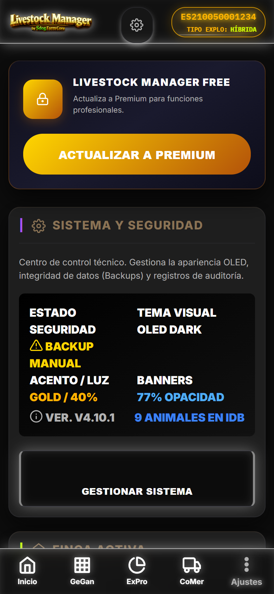

1. Ajustes Generales & Multi-finca
Pantalla #/ajustes centralizada. Banner FREE persistente si PremiumManager.isFree(). Accesos rapidos a todas las configuraciones.
js/views/ajustes-view.js · window.AjustesView1.1 Secciones Ajustes
| Seccion | Contenido | Acciones |
|---|---|---|
| Finca Activa | Selector finca (Free: 1, Premium: multiple), datos RESUMEN, boton Editar (Wizard Finca) | Cambiar finca, Editar finca, Nueva finca (Premium) |
| Modo Explotacion | Flags independientes por finca: Leche (checkbox), Carne (checkbox). Color verde lima carne | Toggle flags, Guardar -> recarga navegacion |
| ADSG | Nombre, codigo, veterinario, colegiado, telefono, NIF, email, vencimiento | Guardar, Validar formato |
| Cuenta / Premium | Estado Free/Premium, boton "Activar Premium" (IAP premium_unlock), restaurar compras | Compra unica Play Store, Verificar recibo |
| Backup & Sincronizacion | Solo Premium: Backup automatico diario, Export/Import JSON, Sincronizacion cloud (futuro) | Exportar backup, Importar backup, Configurar auto |
| Asistente Configuracion | Cargar Demo CHAMORRO, Resetear finca, Wizard Nueva Finca guiado | Cargar demo, Reset, Nuevo wizard |
| Notificaciones | Permisos push, tipos: supresion, vencimientos, stock silos, calidad leche, agenda | Activar/desactivar por tipo |
| Tema & Accesibilidad | Tema sistema/claro/oscuro, Tamano fuente, Alto contraste, Reducir animaciones | Guardar preferencias localStorage |
| Informacion App | Version 4.10.4, Build info, Licencias, GitHub, Changelog, Privacidad | Ver logs, Reportar error |

[CAPTURA] ajustes-general.png Pantalla ajustes con banner FREE, secciones colapsables, selector finca activo2. Gestion Fincas (Free 1 / Premium Ilimitadas)
Modelo Fincas + PremiumManager. Limites en .save() verificados por PremiumQA.runAll().
2.1 Limites Free vs Premium
| Recurso | FREE | PREMIUM | Validacion |
|---|---|---|---|
| Fincas simultaneas | 1 | Ilimitadas | Fincas.count() >= 1 && isFree() bloquea nueva |
| Animales por finca | 15 | Ilimitados | Animales.count(fincaId) >= 15 && isFree() bloquea alta |
| Gastos por finca | 30 | Ilimitados | Gastos.count(fincaId) >= 30 && isFree() bloquea gasto |
| Backup automatico | No | Si (diario) | PremiumManager.isPremium() habilita |
| Informes multi-finca | No | Si | Selector finca en InformesView |
| Export PDF completo | No | Si | Boton exportar informes |
| Export Excel multi-hoja | No | Si | InformesView.exportExcel() |
| CSV SIGGAN completo | No | Si | Cuaderno digital 8 secciones |
2.2 Wizard Finca (Nueva / Editar)
Ver Modulo 01, seccion 6.3. Dos modos: Nueva Finca (1 paso) y Editar Finca Activa (3 pasos).
- Paso 1 Datos Generales + ADSG: Nombre, propietario, REGA (input-rega-std max 14), CEA, NIF/CIF, telefono, direccion, capacidad max, CCAA, tipo explotacion SIGGAN/BADIGEX, sistema explotacion, flags leche/carne, calificacion sanitaria, Guia 365, especies autorizadas, Explotacion Lidia, ADSG completa
- Paso 2 Contrato Lacteo INFOLAC: Nº contrato, fecha fin, comprador, Nº INFOLAC. Aviso si tipo explotacion leche/mixto: contrato obligatorio 1 ano minimo
- Paso 3 Instalaciones Lacteas Letra Q: Solo si flag LECHE. Codigo Letra Q (T-PP-NNNNN), Clasificacion zootecnica compatible, Plazas vacuno leche, Cubiculos, Superficie descanso, Comedero lineal. Si >300 plazas: balsa purines, evaluacion ambiental
2.3 Cambio Finca Activa
- Selector en Ajustes + Header Dashboard (click nombre finca)
App.setFincaActiva(fincaId)-> recarga navegacion menu + vistas + flags modo- Persiste
fincaActivaIdenConfiguracion(IndexedDB) - Recarga carruseles Ganaderia/Explotacion/Comercializacion con auto-fallback tabs
3. 8 Tipos Documentos Unificados (documentos_legales)
Modelo unico para todos los documentos legales/administrativos. Tipo discrimina estructura y validaciones. DocumentViewer comun para PDFs.
js/models/documentos-legales.js · App.DocumentosLegales3.1 Tabla Tipos Documento
| Tipo | Descripcion | Generado Desde | Campos Especificos |
|---|---|---|---|
| DECLARACION_CENSAL | Censo anual oficial (1 enero) | Wizard Censo (3 pasos) | Fecha referencia, desglose especie/categoria, estado tramitacion, º registro, acuse |
| CENSO_ANUAL | Censo periodico complementario | Tramites -> Censo | Mismo esquema DECLARACION_CENSAL |
| PEDIDO_CROTALES | Solicitud oficial crotales ADSG | Wizard Crotales (2 pasos) | Especie, tipo, cantidad, ADSG, veterinario, CCAA destino SIGGAN/BADIGEX |
| GUIA_MOVIMIENTO | Guia sanitaria movimiento animales | Wizard Guia / Venta Masiva | Origen/Destino REGA, animales (crotales), transportista, guia oficial, motivo, CCAA |
| DIMOE | Doc. Identificacion Movimiento Orden Expedicion | Auto: Wizard Venta Masiva | Numero DIMOE-{ALBARAN}, ICA, guia, comprador, transportista, veterinario auth |
| INFOLAC_DECLARACION | Declaracion lactea oficial | Auto: Albaran Leche Wizard | Estado tramitacion, fecha presentacion, º registro, acuse, Nº INFOLAC finca |
| ALBARAN_LECHE | Albaran recogida leche (PDF imprimible) | Albaran Leche Wizard (2 pasos) | 25+ campos normativos, analitica, liquidacion, Letra Q, inhibidores |
| ALBARAN_CARNE | Albaran venta carne (PDF imprimible) | Auto: Wizard Venta Masiva | Animales, ICA, DIMOE, SEUROP, peso canal, precio, comprador, transportista |
3.2 Tramitacion Administrativa (Estados Comunes)
- borrador: Editables, sin º registro
- presentado: Enviado a administracion, pendiente acuse
- validado / aceptado: Confirmado por administracion,
acuse_reciboalmacenado - rechazado / error: Requiere correccion, motivo almacenado
- anulado: Cancelado por usuario, auditoria conservada
Acciones contextuales: Editar (borrador), Reenviar (rechazado), Imprimir (presentado+), Anular (cualquiera menos anulado).
4. Cuaderno Digital RD 787/2023 (CSV SIGGAN 8 Secciones)
Exportacion obligatoria para cumplimiento normativo. Genera ZIP con 8 CSV + README.md. Validacion pre-flight bloqueante. Ver Modulo 04, seccion 6.
4.1 Estructura Export ZIP
TRATAMIENTOS.csv— Fecha, Animal, Producto, Dosis, Via, Veterinario, Retiro carne/leche, Lote, RecetaVACUNACIONES.csv— Fecha, Animal/Rebaño, Vacuna, Lote, Veterinario, Dosis, Via, Proxima revacunacionCENSO_ANUAL.csv— Fecha referencia, Especie, Categoria, Cabezas, REGA, CertificadoCROTALES.csv— Fecha pedido, Especie, Tipo, Cantidad, ADSG, Veterinario, EstadoMOVIMIENTOS.csv— Fecha, Tipo, Origen/Destino REGA, Animales (crotales), Guia, MotivoSANEAMIENTOS.csv— Fecha, Tipo (TB/BRU/LEUCO/IBR/PARA), Rebaño, Animales, Resultado, Veterinario, CCAAFITOSANITARIOS.csv— Fecha, Parcela, Producto, Dosis, Plazo seguridad, Apto comercializacion, OperadorAGENDA.csv— Fecha, Tipo, Titulo, Descripcion, Prioridad, Estado, Recordatorio (seccion complementaria)README.md— Instrucciones importacion SIGGAN/BADIGEX/SIA/PIGGAN, version app, fecha generacion
4.2 Validacion Pre-Flight (Bloqueantes)
- REGA finca formato ES + 12 digitos valido (
ComunidadesService.validarFormatoREGA) - ADSG registrada completa: nombre, codigo, veterinario, colegiado, NIF, vencimiento > hoy
- NIF/CIF titular valido (formato ESP)
- Todos los tratamientos: lote medicamento + via + veterinario + colegiado
- Animales implicados: crotal 15 digitos ISO 11784 completo
- Movimientos: guia oficial + REGA destino valido + tipo operador destino permitido
- Vacunaciones: lote vacuna + veterinario + programa ADSG
Resultado: Toast verde "Cuaderno digital exportado: CUADERNO_DIGITAL_{REGA}_{YYYYMMDD}.zip" o Modal error detallado por seccion.
5. Trazabilidad 360° (6 Fuentes Unificadas)
Vista #/trazabilidad o widget en ficha animal. Consolida 6 fuentes en timeline cronologico unico. MotorTrazabilidad + Trazabilidad services.
js/services/trazabilidad.js · js/services/motortrazabilidad.js5.1 Las 6 Fuentes de Trazabilidad
| Fuente | Coleccion/Tabla | Eventos Tipo | Identificador Animal |
|---|---|---|---|
| Produccion Leche | produccion_leche | ordeño, entrega_tanque, balance_lacteo | animal_id (hembras lecheras) |
| Produccion Carne | pesajes / comercializacion_carne | pesaje_individual, pesaje_lote, venta | animal_id / crotal |
| Sanidad | sanitarios | tratamiento, vacunacion, saneamiento | animal_id / rebaño_id |
| Reproduccion | reproduccion / animales | celo, ia, diagnostico, parto, aborto, secado | animal_id (madre/cria) |
| Movimientos | movimientos / documentos_legales | entrada, salida, traslado, DIMOE, ICA | crotal (lista 15 dig) |
| Gastos Imputados | gastos + registro_eventos | alimentacion, sanidad, fitosanitario, silo_consumo | rebaño_id / zona_id / animal_id |
5.2 Vista Trazabilidad Animal (Widget Ficha)
- Timeline cronologico inverso (mas reciente arriba)
- Icono + color por fuente: Leche (azul), Carne (naranja), Sanidad (rojo), Repro (rosa), Movimientos (verde), Gastos (gris)
- Expandible: Click -> detalle completo (dosis, veterinario, precio, analitica, etc.)
- Filtros: Fuente, Fecha rango, Tipo evento
- Enlace "Ver registro origen" -> navega a vista/edicion correspondiente
5.3 Funciones Clave MotorTrazabilidad
checkSupresion(animalId, tipo: 'carne'|'leche')-> {activa: boolean, diasRestantes: number, motivo: string}getTimeline(animalId)-> array unificado 6 fuentes ordenadoverificarRetiroLeche(rebañoId)-> boolean (bloquea Albaran Leche)generarEstructuraAlbaran(tipo, datos)-> estructura PDF Albaran Leche/CarnegenerarDIMOE(ventaData)-> documento DIMOE auto numerado
6. Subexplotaciones SIGGAN / BADIGEX
Gestion de subexplotaciones (explotaciones vinculadas a la principal). REGA propio, ADSG propia, tipo explotacion independiente. Cumple RD 787/2023 y normativa CCAA.
6.1 Datos Subexplotacion
- Nombre, REGA propio (ES + 12 dig, validador CCAA), CEA
- Tipo explotacion SIGGAN/BADIGEX (selector obligatorio)
- ADSG propia (nombre, codigo, veterinario, colegiado, vencimiento)
- Especies autorizadas, Capacidad maxima
- Flags leche/carne independientes de finca principal
- Estado: Activa / Inactiva / Baja
6.2 Integracion
- Selector subexplotacion en: Wizard Movimiento, Wizard Guia, Venta Masiva (destino), Alta animal (origen)
- Movimientos entre subexplotaciones: tipo 'traslado', motivo 'traslado_subexplotacion', genera DIMOE interno
- Censo consolidado: Suma finca principal + subexplotaciones activas
- Export CSV cuaderno digital incluye subexplotaciones en seccion MOVIMIENTOS
7. Agenda & Recordatorios
Calendario eventos ganaderos con recordatorios push. Integrado en Dashboard (widget), Ganaderia (widget), SanidadView. AgendaView + NotificacionesService.
7.1 Tipos Evento Agenda
| Tipo | Color | Ejemplos | Recordatorio Auto |
|---|---|---|---|
| Sanitario | Rojo | Retiro supresion, Vacunacion proxima, Saneamiento vencido | 30/15/7/1 dias antes |
| Reproductivo | Rosa | Diagnostico optimo, Secado, Parto estimado | 7/1 dias antes |
| Administrativo | Ambar | Vencimiento PAC, Contrato, ADSG, Guia 365, Censo | 30/15/7 dias antes |
| Produccion | Azul | Limpieza tanque, Analitica programa, Control DHI | 1 dia antes |
| Financiero | Verde | Pago proveedores, Facturacion, Revision costes | 7/1 dias antes |
| Personalizado | Gris | Libre (usuario) | Configurable |
7.2 Recordatorios Push (Capacitor/PWA)
- Permisos solicitados en Ajustes > Notificaciones
- Programacion local (
capacitor-local-notifications) - funciona offline - Canales: Urgente (supresion 0 dias), Alta (vencimientos <7d), Normal (resto)
- Accion tap notificacion -> abre app en vista correspondiente (deep link hash)
8. Patrimonio & ICA por Animal (Solo Flag CARNE)
Inventario valorado del ganado (ICA - Indice de Capacidad Aprovisionamiento). Solo visible si flag CARNE = true. Ver Modulo 01, seccion 4 Patrimoio.
8.1 Calculo ICA por Animal
- Valor base: Segun especie, categoria, raza, edad (tabla referencias MAPA/SIGGAN)
- Plusvalia produccion: Leche (litros x precio), Carne (pesajes x GMD x precio canal)
- Depreciacion: Edad > optima (vacas > 6 anos, terneros > 18m) -5%/ano
- Costes acumulados: Compra + Sanidad + Alimentacion (imputados)
- ICA FINAL = Valor base + Plusvalia - Depreciacion - Costes
8.2 Vista Patrimonio (Ganaderia Submodulo)
- Tabla: Animal, Crotal, Especie, Categoria, Edad, ICA actual, Valor compra, Costes totales, Plusvalia, Depreciacion
- Totales: ICA total finca, Inversion total, Plusvalia neta, ROI %
- Grafica evolucion ICA 6 meses (linea por rebaño)
- Filtros: Rebaño, Especie, Categoria, Rango ICA
- Export Excel/CSV para analisis contable
9. Importador RFID / Lectura NFC
Lectura crotales EID via NFC (Android) o lector Bluetooth RFID. Importacion masiva CSV/Excel de listas crotales. Validacion formato ISO 11784 15 digitos.
9.1 Lectura NFC (Android Capacitor)
- Boton "ESCANEAR CROTAL NFC" en Wizard Animal (Identificacion) y Wizard Movimiento
- Usa
CapacitorNFCplugin:NFC.enabled()->NFC.addListener('tag') - Lee UID tag -> busca en
animalesporrfid_uidonumero_identificacion - Si encontrado: auto-rellena ficha / selecciona animal en movimiento
- Si no encontrado: ofrece "Crear animal nuevo con este RFID"
9.2 Lector RFID Bluetooth (Opcional)
- Soporte generico Bluetooth SPP (Serial Port Profile)
- Configuracion en Ajustes > Dispositivos RFID: MAC address, Prefijo/Sufijo trama
- Modo "Pistola": Lectura continua -> añade a lista seleccion multiple (Wizard Movimiento, Censo)
9.3 Importador Masivo Crotales (CSV/Excel)
- Acceso: Ajustes > Asistente Configuracion > Importar Crotales
- Columnas esperadas:
crotal(obligatorio, 15 dig),rfid_uid,especie,raza,fecha_nacimiento,sexo,rebaño,zona - Validacion: Formato ISO 11784, duplicados, raza valida FEGA, rebaño/zona existen
- Resultado: Reporte importados / errores / duplicados. Crea animales estado 'activo'
10. Datos Demo CHAMORRO — Configuracion & Documentos
Finca demo con todos los datos para probar configuracion multi-finca, documentos, cuaderno digital, trazabilidad, RFID.
10.1 Precarga Configuracion
10.2 Pruebas Clave en Demo
- Cambio finca Principal <-> Subexplotacion -> recarga flags, navegacion, carruseles
- Export Cuaderno Digital -> ZIP 8 CSV + README, pre-flight verde
- Trazabilidad animal (ficha edicion) -> 6 fuentes timeline, enlaces origen
- NFC Scan (simulado) -> busca animal por rfid_uid, rellena ficha
- Importar Crotales CSV -> valida 15 dig, crea animales, reporte errores
- Wizard Finca Editar Paso 3 Letra Q -> validaciones condicionales >300 plazas
- Agenda -> recordatorios push locales (simulados), tap -> deep link vista